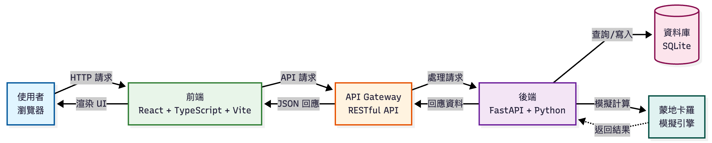
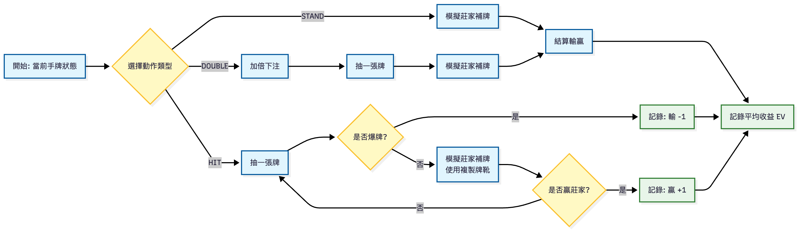

基於蒙地卡羅模擬的 21 點策略學習平台
Web APP 開發 - 期末專案
第十組
前後端分離設計

前端 ↔ API Gateway ↔ 核心邏輯 ↔ DB
API Endpoints
POST /api/gamesPOST /api/games/{id}/actionPOST /api/games/{id}/next-roundGET /api/games/{id}/analysis使用者認證 (Auth)
POST /api/auth/register - 註冊POST /api/auth/login - 登入 (JWT Token)歷史記錄與數據 (History)
GET /api/history/mistakesGET /api/history/sessionsGET /api/history/sessions/{id}/mistakes五大功能深度解析
EV = (勝率 - 敗率) × 倍數

預計成本 < 30萬台幣 (開發+行銷)，高潛在 ROI